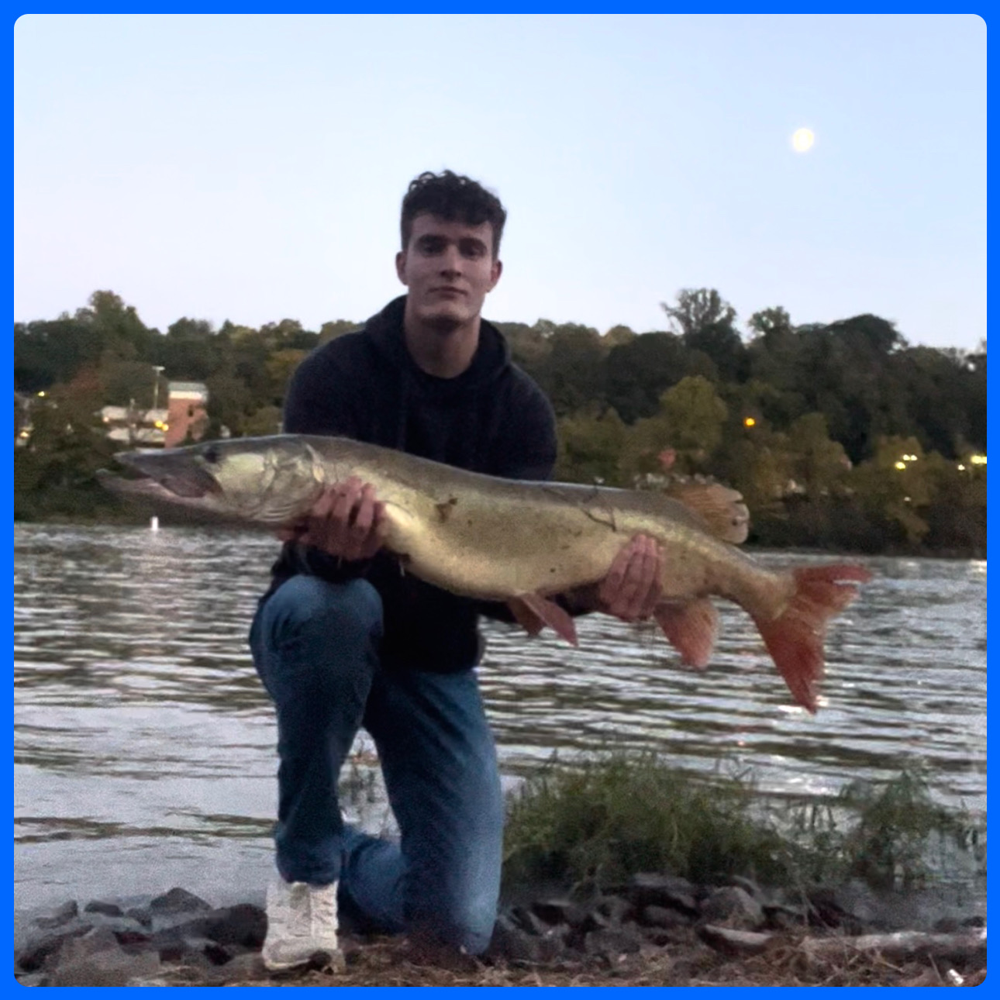

About Me
Hiking
I have been very lucky to live in 2 states with amazing hiking over the last few years: West Virginia and Colorado. I love to find new trails and enjoy some incredible views!
Fishing
Without a doubt, my favorite activity is fishing. Take a look at the fishing dashboard I created for an interactive map showing every fish I have caught since August 2023!
